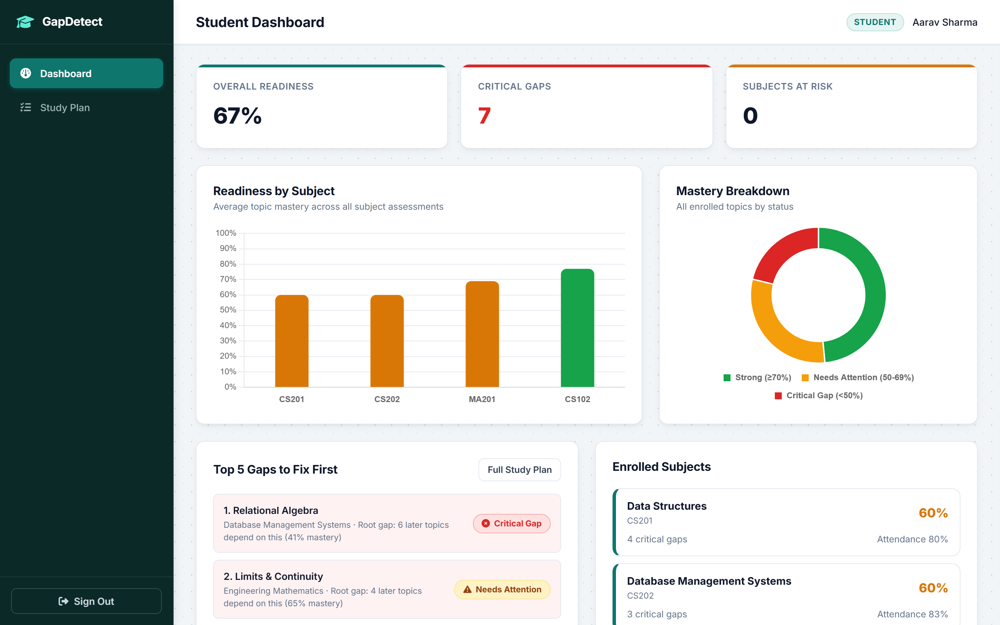
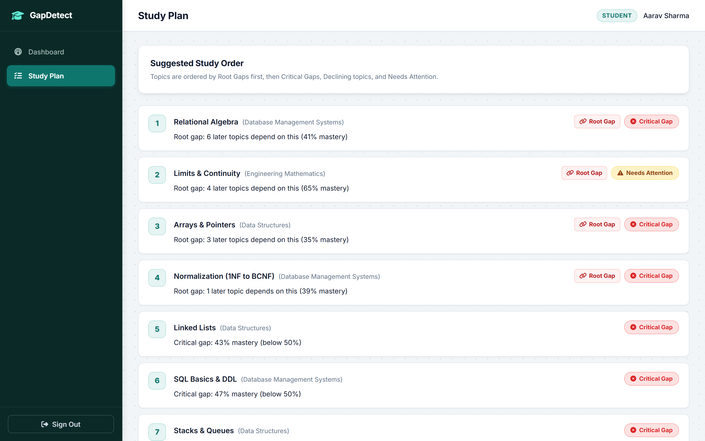
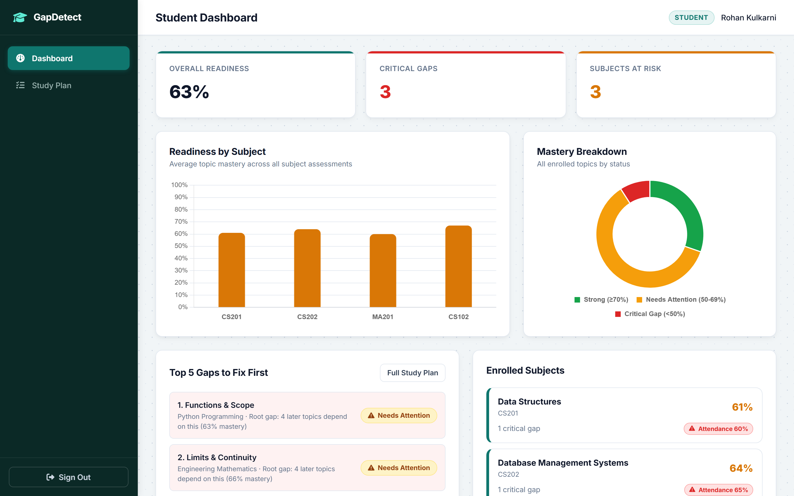

A Rule-Based Learning Gap and Prerequisite Tracking Application
Mini Project Report
Submitted in partial fulfillment of the requirements for the award of the degree of
BACHELOR OF COMPUTER APPLICATIONS
Specialization: Artificial Intelligence & Data Science
Submitted by:
Swapnil Sahu
PRN: 2024BCAAI042 | Roll No: 42
Under the Guidance of:
Prof. Rajesh Gupta
Assistant Professor, Department of Computer Applications
DEPARTMENT OF COMPUTER APPLICATIONS
Ajeenkya DY Patil University, Charholi Budruk, Pune – 412105
Semester VI | Academic Year 2026-27
Certificate of Completion
Department of Computer Applications • Academic Year 2026-27
This is to certify that the mini project report entitled "Academic Gap Detection System" is a bona fide record of work carried out by Swapnil Sahu (PRN: 2024BCAAI042, Roll No: 42) in partial fulfillment of the requirements for the degree of Bachelor of Computer Applications (AI & Data Science) at Ajeenkya DY Patil University, Pune during the academic year 2026-27.
The project was developed under regular supervision and adheres to the academic and technical standards prescribed by the university curriculum. The candidate has satisfactorily demonstrated the working web application and presented this comprehensive documentation.
Prof. Rajesh Gupta
Project Guide • Asst. Professor
Dr. S. K. Kulkarni
Head of Department (BCA)
Acknowledgement
Expression of Gratitude
I would like to express my sincere gratitude to my project guide, Prof. Rajesh Gupta, for his continuous guidance, encouragement, and practical suggestions throughout the development of this academic gap detection application. I also thank Dr. S. K. Kulkarni, Head of the Department of Computer Applications, and the faculty members of the School of Information Technology for providing necessary lab facilities and technical support. My heartfelt thanks go to Ajeenkya DY Patil University for offering a curriculum that fosters hands-on problem solving. Finally, I appreciate the feedback received from my peers during testing and demonstration sessions.
Abstract & Table of Contents
Overview and Document Layout
Abstract
In conventional academic evaluation systems, student performance is typically summarized using aggregate percentages or letter grades. While straightforward, aggregate marks mask critical concept-level deficiencies and fail to explain why a student is struggling. For instance, a student failing Advanced Binary Search Trees may simply lack foundational skills in Arrays and Pointers. This project presents the Academic Gap Detection System, a transparent, rule-based web application that identifies topic-level learning gaps, traces prerequisite dependency chains to uncover root causes, monitors attendance vulnerability, and generates prioritized recovery study plans. Developed using Next.js 14, Supabase (PostgreSQL), and Chart.js, the system avoids complex black-box machine learning models in favor of deterministic threshold logic that works immediately with small classroom datasets. It provides students with actionable remedial pathways while offering educators real-time visual heatmaps and class-wide gap analytics to drive timely classroom interventions.
Table of Contents
Section
Title
Page No.
—
Cover Page
1
—
Certificate of Completion & Acknowledgement
2
—
Abstract and Table of Contents
3
Section 1
Introduction, Problem Statement, Objectives, and Scope
4
Section 2
Technology Stack & Deployment Architecture
5
Section 3
System Design, Architecture Diagram, and Data Schema
6
Section 4
Modules and Core Gap Detection Logic
7
Section 5
System Screenshots – Part 1: Authentication & Faculty Analytics
8
Section 6
System Screenshots – Part 2: Student Dashboard & Remedial Plan
9
Section 7
Testing, Limitations, Future Scope, Conclusion, and References
10
1. Introduction & Problem Statement
Context, Objectives, and Project Boundaries
1.1 Introduction
Higher education coursework is strictly cumulative. Advanced engineering and computer science concepts build directly on foundational topics taught earlier in the semester. For example, a student cannot understand Database Normalization without grasping Relational Algebra, nor implement Graph Algorithms without proficiency in Linked Lists and Queues. When students struggle, traditional university evaluation systems report aggregate percentages such as 55% in Data Structures. Such aggregate scores do not tell the learner which specific concept went wrong or where remediation must start.
The Academic Gap Detection System is designed to solve this diagnostic problem. It tracks scores at the individual topic level and maps topic prerequisites in a directed graph. The system computes topic mastery, assesses performance trends across consecutive assessments, identifies root-cause prerequisites, monitors attendance risk, and constructs a sequenced study schedule.
1.2 Problem Statement
Traditional educational portals suffer from three major shortcomings:
Lack of Granularity: Marks are recorded per exam rather than per topic, concealing localized knowledge deficits.
Prerequisite Blindness: A student who fails an advanced concept is repeatedly tested on it, when the true failure originates from an unlearned prerequisite.
Delayed Intervention: Teachers lack a consolidated visual overview to quickly spot topics where over 40% of the class is failing simultaneously.
1.3 Project Objectives
Topic-Level Mastery Assessment: Calculate deterministic percentage scores for each topic across assessments.
Root-Cause Prerequisite Tracing: Automatically trace prerequisite chains to distinguish foundational "Root Gaps" from downstream "Affected" topics.
Performance Trend Tracking: Compare the two most recent assessments to flag rapid learning drops (drops of 10% or more).
Attendance Risk Monitoring: Correlate academic progress with subject attendance, flagging students below the 75% threshold.
Prioritized Study Plan Generation: Produce an actionable study sequence with plain-language diagnostic explanations.
1.4 Scope of the Project
The application supports student and teacher user roles. In-scope capabilities include role-based authentication, student self-diagnostic dashboards, subject topic trees, individualized study plans, teacher class rosters, topic heatmaps, and systemic weak topic identification. Out of scope are online exam proctoring, payment gateways, and LMS content hosting.
2. Technology Stack & Deployment
Tools, Libraries, and Hosting Architecture
2.1 Technology Selection Table
Layer
Technology
Why It Was Used
Language
JavaScript (Node.js ES2023)
Universal runtime across client and server. Native JSON handling without compilation overhead.
Framework
Next.js 14 (App Router)
Enables modular server-side API routes, React components, and unified full-stack routing.
Secure password hashing and signed, stateless, HttpOnly session cookies without third-party lock-in.
Visualizations
Chart.js & react-chartjs-2
Responsive HTML5 canvas rendering for bar charts and mastery breakdown doughnut charts.
Styling & Icons
Vanilla CSS & Font Awesome 6
Design consistency via CSS custom properties without CSS bloat; comprehensive icon set.
Testing & QA
Node Test Runner & Playwright
Headless browser automation and pure function assertions to verify gap logic and end-to-end flows.
Hosting
Vercel Cloud Platform
Automated CI/CD from Git, edge caching, and serverless Node.js execution with high availability.
2.2 Deployment Architecture
The application is deployed on Vercel's serverless edge infrastructure. When a user requests a dashboard or submits credentials, Vercel executes the Next.js API route inside an isolated serverless function container. All state is maintained externally in Supabase PostgreSQL, ensuring zero dependency on persistent local disk storage.
Sensitive keys (SUPABASE_SERVICE_KEY and SESSION_SECRET) are injected strictly through Vercel environment variables. Browser clients interact only with server-side routes; client-side code never receives the database secret key. This design enforces strict data isolation and secures student records.
3. System Design & Data Model
User Roles, System Architecture, and Database Schema
3.1 User Roles & Capabilities
Student Role: Accesses personal dashboard, views overall readiness percentage, inspects topic status badges, observes prerequisite warnings, and navigates a prioritized study sequence.
Teacher Role: Monitors class readiness distribution, explores student-by-topic mastery heatmaps, tracks low attendance warnings, and reviews class-wide weak topics where over 40% fail.
3.2 Database Schema and Relational Model
The PostgreSQL database contains 5 normalized tables. Foreign keys enforce cascade deletes to prevent orphaned records. The topics table implements a self-referential foreign key (prerequisite_topic_id) to model dependency graphs.
4. Modules & Core Gap Logic
System Components, Algorithm Rules, and Worked Example
4.1 System Modules
Authentication Module: Verifies credentials against bcrypt hashes and issues signed HttpOnly JWT cookies.
Student Portal Module: Renders readiness gauges, subject breakdowns, and prioritized study recommendations.
Teacher Analytics Module: Aggregates class metrics, cohort risk indicators, and student-by-topic heatmaps.
Gap Detection Engine (lib/gapEngine.js): Central rule engine implementing threshold logic and study ordering.
4.2 Core Logic Rules (lib/gapEngine.js)
Mastery: Computed as (sum of marks / sum of max_marks) * 100 across all tests for that topic.
Thresholds: ≥ 70% is Strong; 50% to 69% is Needs Attention; < 50% is Critical Gap.
Trend Detection: Evaluates latest two tests. If the score drops by 10+ points, topic is tagged Declining.
Root Cause Tracing: If topic A is weak and its prerequisite B is weak, B is tagged Root Gap and A is tagged Affected.
Root Gap Evaluation: Both are weak. Because Linked Lists depends on Arrays & Pointers, Arrays is marked Root Gap (Priority 1), while Linked Lists is marked Affected.
Figure 5: Class-Wide Weak Topics
Flags curriculum bottlenecks where over 40% of the class suffers from critical knowledge gaps.

Figure 6: Student Dashboard
Visualizes subject readiness via Chart.js bar charts and overall topic status with a doughnut chart.

Figure 7: Prioritized Study Plan
Presents a sequenced remedial checklist placing foundational Root Gaps ahead of dependent topics.

Figure 8: Attendance Risk Warning
Displays prominent risk warnings when a student's attendance drops below the 75% regulatory threshold.
7. Testing, Evaluation & Conclusion
Verification Results, Constraints, and Summary
7.1 Test Execution Table
TC #
Test Action
Expected Result
Actual Result
TC-01
Enter invalid login password
401 response; error banner displayed
Passed. "Invalid email or password" shown
TC-02
Submit valid teacher credentials
Session cookie set; redirect to /teacher
Passed. Authenticated and redirected
TC-03
Compute topic mastery score
Average percentage of tests
Passed. Correctly averaged (e.g. 36%)
TC-04
Classify status threshold
≥70% Strong, 50-69% Attention, <50% Critical
Passed. Badges match defined thresholds
TC-05
Evaluate declining trend
Drop ≥ 10% in latest two tests
Passed. Flagged Priya Nair declining topics
TC-06
Detect Root Gap in chain
Tag parent as Root Gap, child as Affected
Passed. Arrays flagged as root for Linked Lists
TC-07
Monitor 75% attendance
Flag "At Risk" when attendance < 75%
Passed. Rohan Kulkarni flagged in 3 subjects
TC-08
Order study plan priority
Root Gaps → Critical → Declining → Attention
Passed. Sequence ordered correctly
7.2 Limitations
Thresholds are static (70/50%) rather than adaptive to difficulty.
Prerequisite chains cannot link topics across different subjects.
Application requires active network to reach Supabase.
System relies on teacher input; no automated quiz scanner.
7.3 Future Scope
Cross-subject prerequisite dependency mapping.
LMS integration with platforms such as Moodle and Classroom.
Automated email alerts dispatched to at-risk students weekly.
Question-level error taxonomy tagging (conceptual vs syntax).
7.4 Conclusion
The Academic Gap Detection System successfully replaces opaque aggregate marks with transparent, topic-level diagnostic intelligence. By tracing prerequisite dependencies, the application guides students to resolve foundational gaps before attempting dependent concepts. Teachers gain immediate visibility into class-wide weak topics and attendance vulnerabilities through real-time heatmaps. The architecture is lightweight, reliable, and easily deployable on modern cloud platforms.